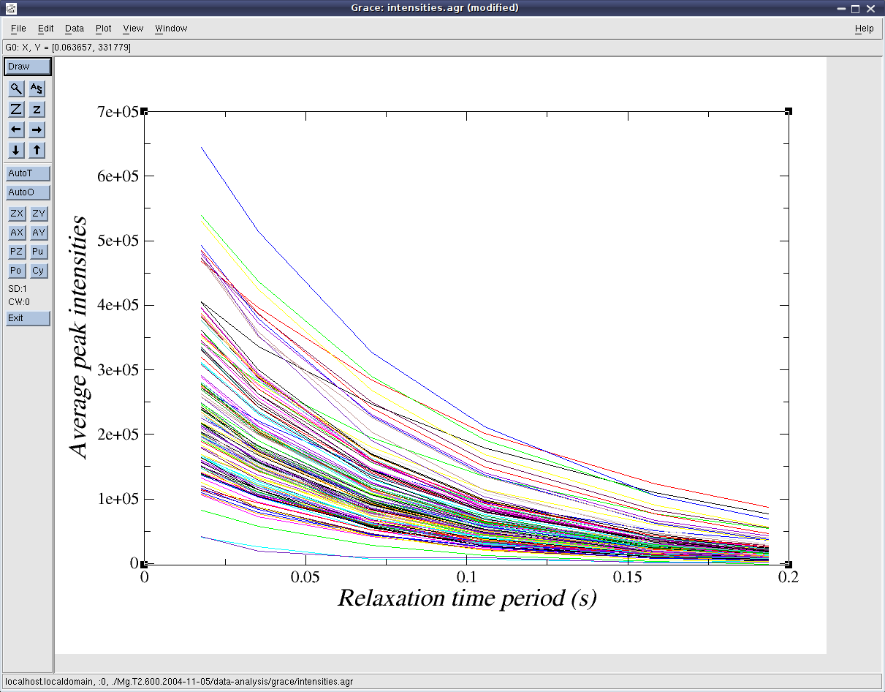

Next: Calculating the NOE Up: Relaxation curve-fitting Previous: Relax-fit GUI mode - Contents Index
To be sure that the data has been properly collected and that no instrumentation or pulse sequence timing errors have occurred, it is essential to carefully check the intensities.agr and intensities_norm.agr 2D Grace files. These are plots of the decay curves for each spin system analysed, and any non-exponential behaviour should be clearly visible (see Figure 6.1). If Xmgrace or a compatible program is not available for your operating system, the Grace files contain text representations of the curves at the end which can opened, edited and visualised in any another 2D graphing software package.
|
 |
Note that errors resulting in systematic bias in the data - for example if temperature control (single-scan interleaving or temperature compensation blocks) or per-experiment/per-spectrometer temperature calibration on MeOH or ethylene glycol have not been performed - will not be detected by looking at the decay curves. See section 6.2.1 or the relax_data.temp_calibration user function documentation on page ![[*]](crossref.png) and the relax_data.temp_control user function documentation on page for more details.
and the relax_data.temp_control user function documentation on page for more details.